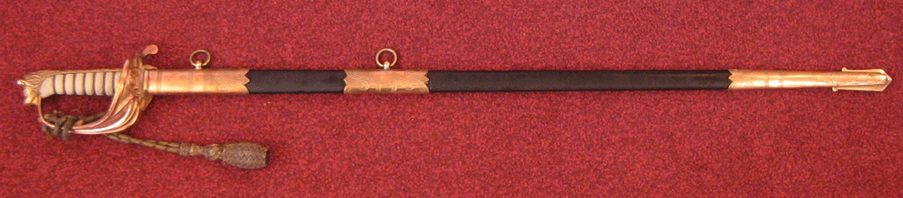
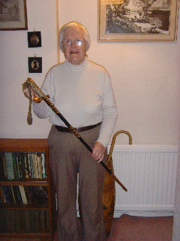
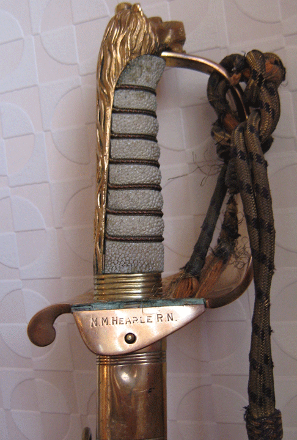

The tragic story of Lt/Cdr N M Hearle's death is documented elsewhere on this site. He had a very unlucky naval career; being taken prisoner of war after a mine-laying operation off Holland in August 1940 flying a Swordfish of 812 Squadron, and was not released until the end of the war in 1945.
His Observer on this operation was the well known film actor Rupert Davies, better known for his role as the pipe-smoking French detective Inspector Maigret, in the popular TV series of the 1960's. Both were interned in the notorious Stalag Luft III Concentration Camp and were actively involved in the escape tunnelling as shown in the film 'The Great Escape'. Click Here
In November 2006 a visitor to this web site informed me that he had recently bought a sword from a dealer which belonged to a L/Cdr Hearle. He knew nothing about Hearle other than he was a Fleet Air Arm Pilot who had been a WW2 POW. He was delighted that this site provided him with much more information, and sent me photos of the sword.
  
After many attempts to find any relatives of Nat Hearle, in August 2007 I finally found his younger sister Audrey Sinclair living in St Albans. By coincidence, in 2008 the owner of the sword contacted me to say that he had decided sell the sword on, and gave me first refusal. I immediately contacted Audrey and she readily agreed to buy it. So now it is back where it rightly belongs, in the possession of the Hearle family.